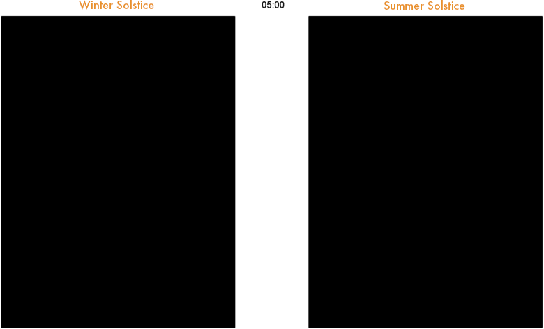

Finding Sunlight
Mapping the numbers of hours of direct sunlight in cities
Hours of daylight is given from the interval between sunrise and sunset at a specific location on Earth. Hours of daylight through the year are calculated using the relative position of the sun defined by the azimuth and zenith angles, from a point of observation at a given longitude, latitude and altitude.
However, in the case of rugged landscapes (hills, mountains) or urban environments (buildings), daylight hours will not necessarily reflect the total number of hours of direct sunlight (HDS) that an observer will receive in a day. HDS data is much more complex to calculate and must be derived from volumetric projections of local topographic features and physical objects such as buildings and trees.
We developed an algorithm to generate Boolean grids (e.g. sun / no sun) at any given time of the day using topographic raster grids. The model computes and stores the 360 degree horizon line for every raster cell. The horizon raster dataset is then compared with the sun’s azimuth and zenith at a specific time to determine areas of direct sunlight or shade. By querying horizon raster grids, we can quickly estimate the volumetric projection of buildings, trees or hills and animate in time the path of shades over horizontal surfaces.
Whether we are looking at cities or regions with rugged landscapes, knowing precisely when the sun will appear or disappear and how much direct sunlight a location will receive is relevant to a wide variety of domains such as:
- Real estate
- Transportation and road safety
- Solar energy
- Agriculture and gardening in general
- Hospitality
- Outdoor activities
Average daily hours of direct sunlight in December, Wellington City
Instant shade through the day (5am to 10pm) in Wellington City at the winter solstice (21st June, left) and summer solstice (21st December, right)